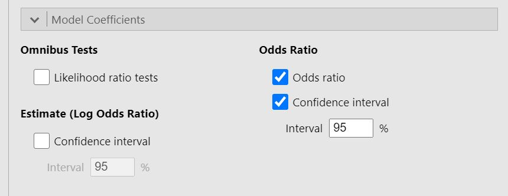
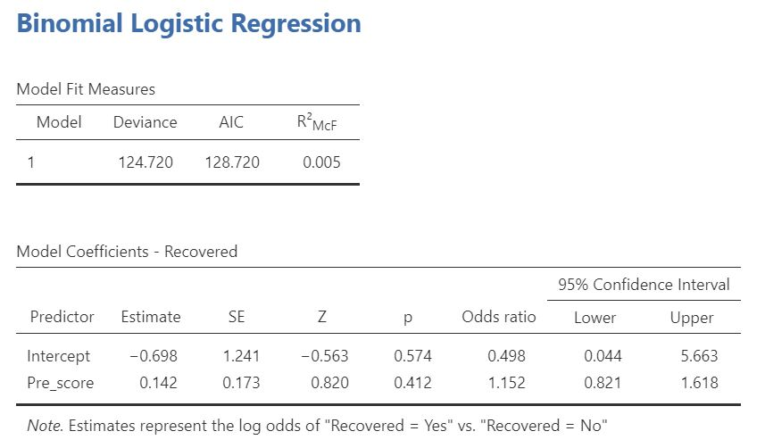

12 Regression: Logistisk
Hur du gör en logistisk regression i jamovi:
Du behöver en kategorisk beroende variabel och minst en prediktorvariabel.
Kontrollera att skalnivåerna är valda9 så att din beroende variabel är markerad med . Ett lämpligt dataset kan se ut ungefär såhär:
. Ett lämpligt dataset kan se ut ungefär såhär:

Välj
Analyses->Regression.
Om din beroende variabel består av nominaldata: välj2 Outcomesom den består av två nivåer ellerN Outcomesom den består av fler än två nivåer. Om din beroende variabel består av ordinaldata, välj iställetOrdinal Outcomes.

Flytta din beroende variabel till Dependent Variable. Flytta sedan kontinuerliga prediktorer till Covariates och kategoriska prediktorer till Factors.

Scrolla ner till
Model Coefficientsoch bocka i rutorna Odds ratio och Confidence interval.
Resultatet räknas ut direkt:
